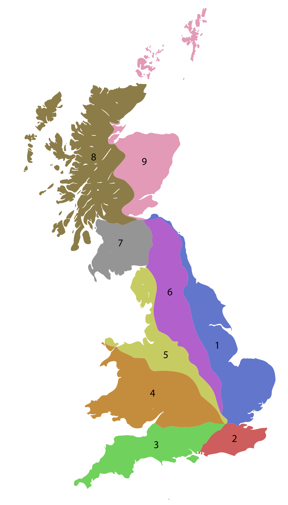

The numbering system was devised in the 1920s...

Covers North London, Essex, East Anglia, and Yorkshire.
Boundary: North of the River Thames, East of the A1.
Covers Kent, Sussex, and South London.
Boundary: South of the River Thames, East of the A3.
Covers Hampshire, Southampton, and the West Country.
Boundary: West of the A3, South of the A4.
Covers Bristol, Oxford, South Wales, and the West Midlands.
Boundary: North of the A4, South/West of the A5.
Covers North Wales, Cheshire, Cumbria, and Lancashire.
Boundary: North/East of the A5, West of the A6.
Covers Nottinghamshire, Yorkshire, and the North East.
Boundary: East of the A6, West of the A1.
Covers Dumfries, Galloway, and Central Scotland south of the Clyde.
Boundary: North of the Solway Firth, West of the A7.
Covers Glasgow (north), Argyll, and the Western Isles.
Boundary: North of the A8, West of the A9.
Covers Fife, Aberdeen, Orkney, and Shetland.
Boundary: North of the A8, East of the A9.